MANU RECORDS APRESENTA
Em cartaz
Escolha a sua sessão. Cada cartaz abre o WhatsApp com o pedido de orçamento já escrito.
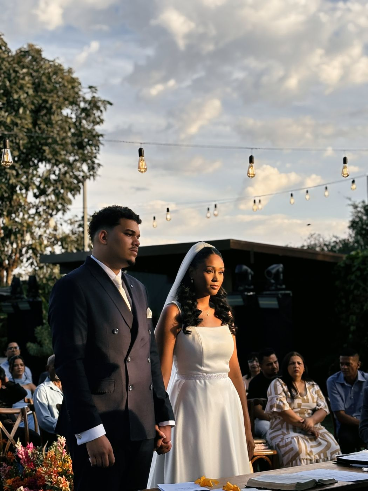
Casamento
O grande dia, da preparação à festa.
Pedir orçamento →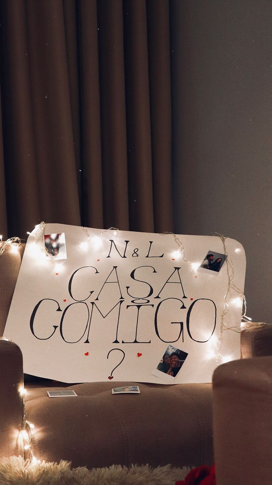
Pedido de casamento
O momento do sim, do jeito que aconteceu.
Pedir orçamento →Ensaio de casal e pré-wedding
Vocês dois, sem pose ensaiada.
Pedir orçamento →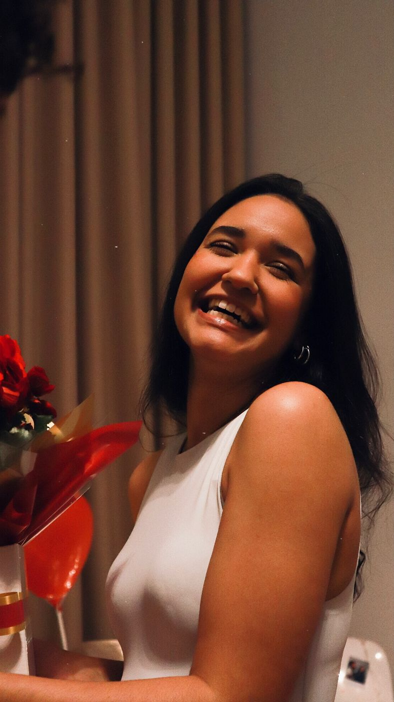
Ensaio individual
Retratos com a sua cara.
Pedir orçamento →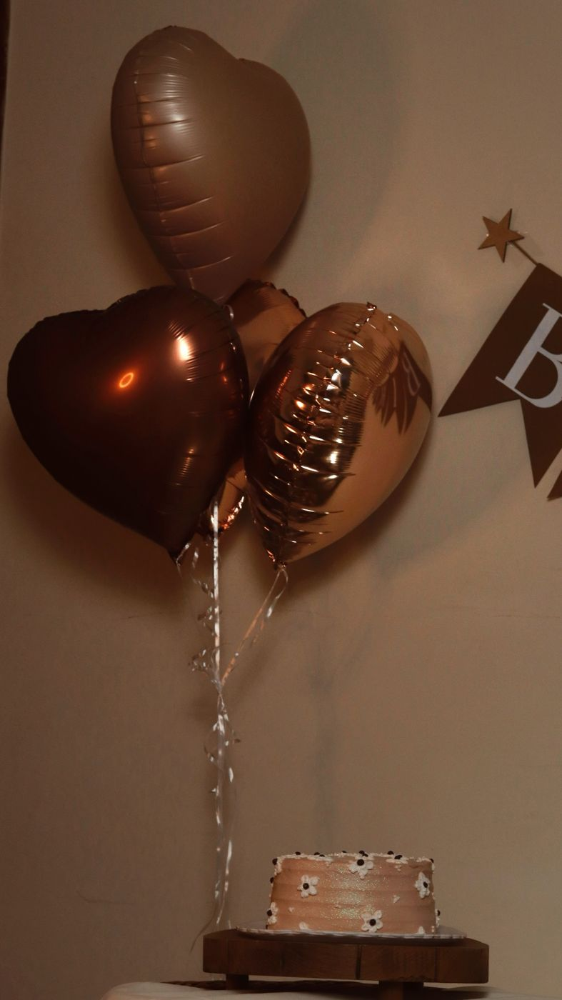
Aniversários
A festa e os detalhes que passam rápido.
Pedir orçamento →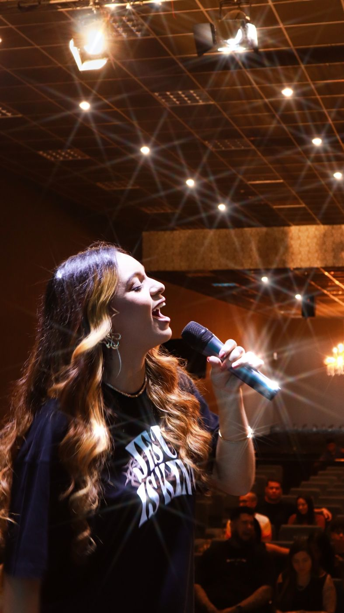
Shows e eventos
Palco, luz e público.
Pedir orçamento →Cobertura
de stories
Enquanto vocês vivem o dia, eu cuido dos stories. Gravo em vídeo vertical, no formato do Instagram, para quem não pôde ir acompanhar tudo.
- Preparativos e bastidores
- Decoração e detalhes
- Entrada, votos e festa
Rolo de filme
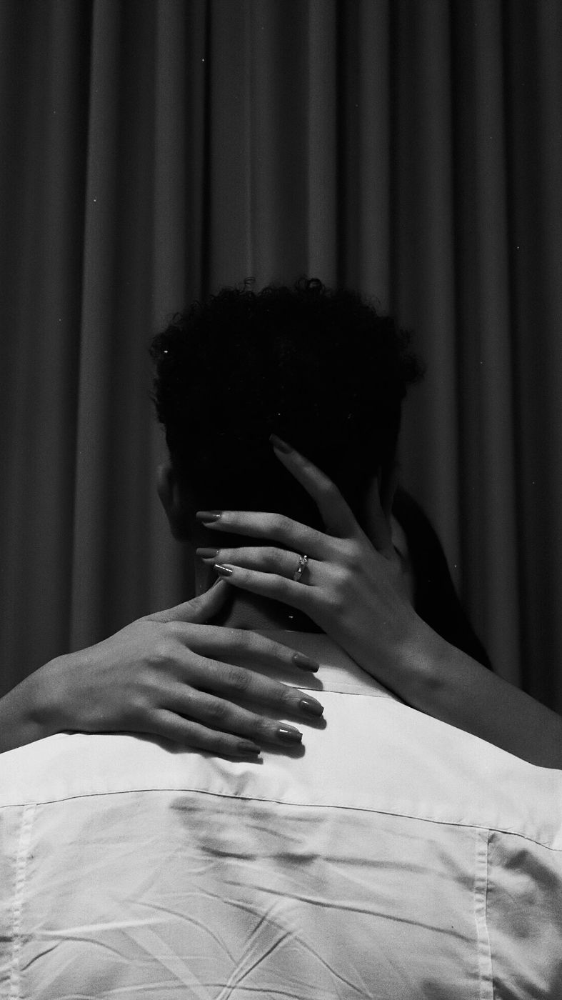
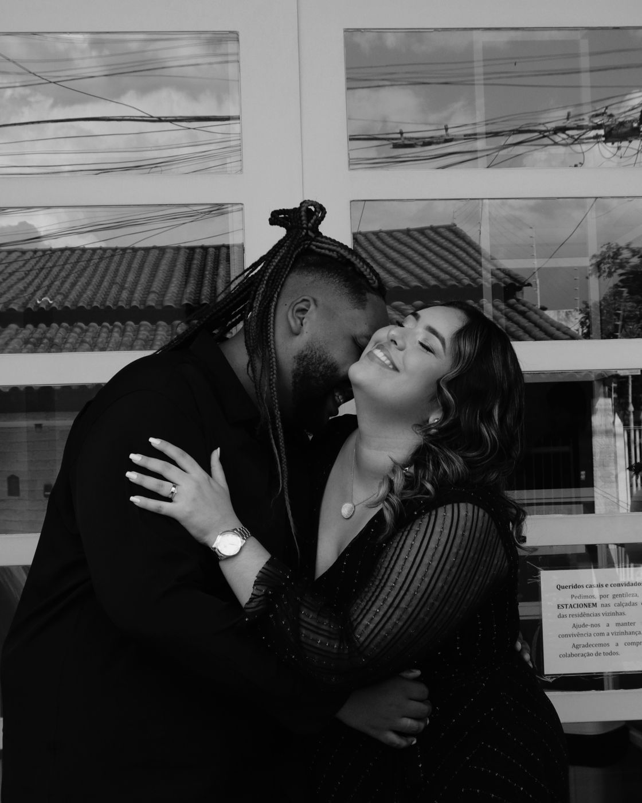
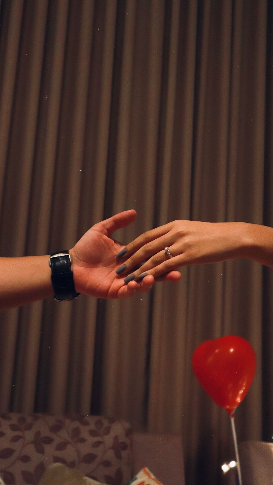
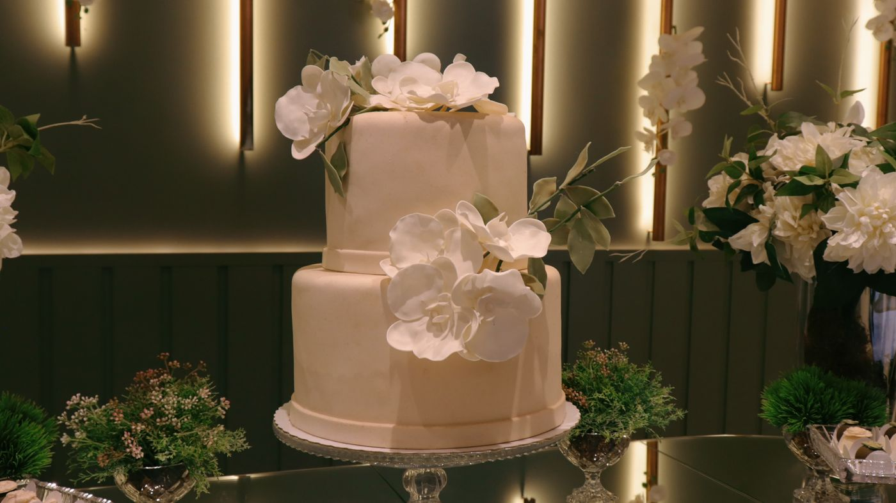
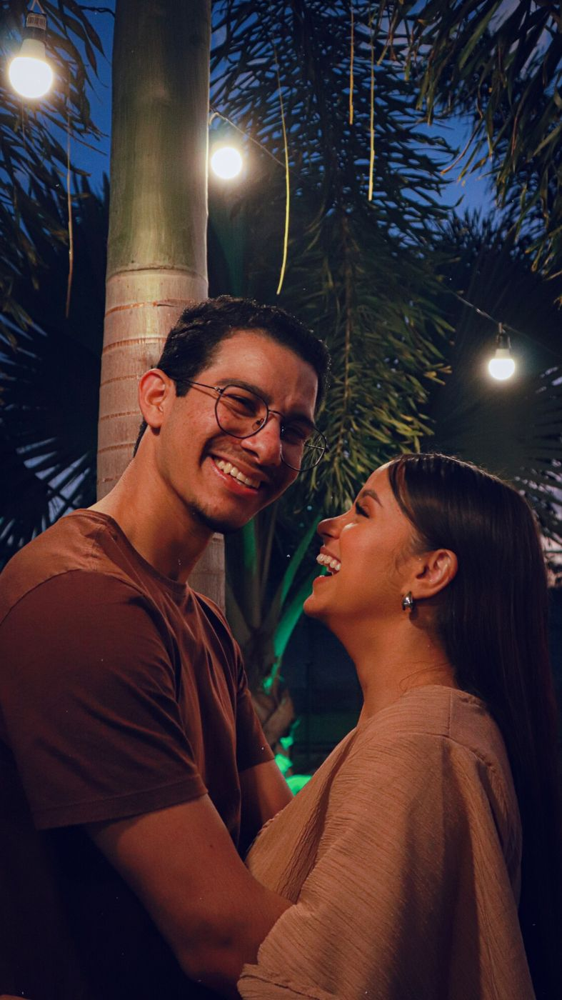
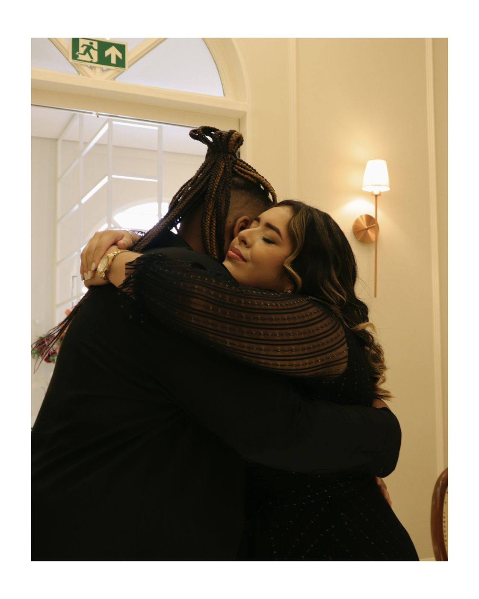
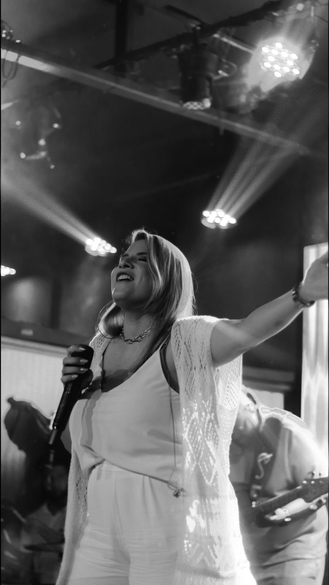
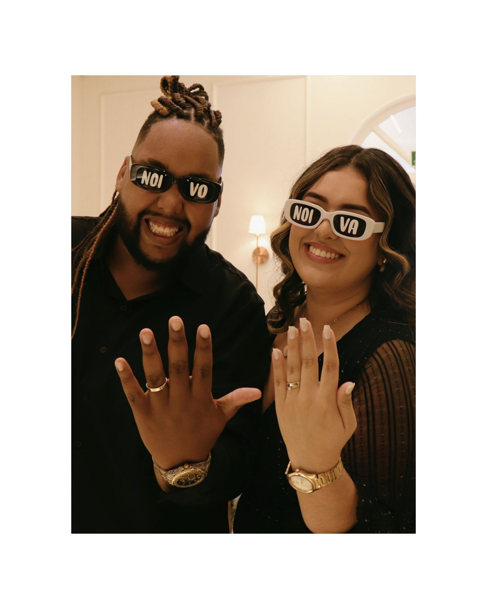
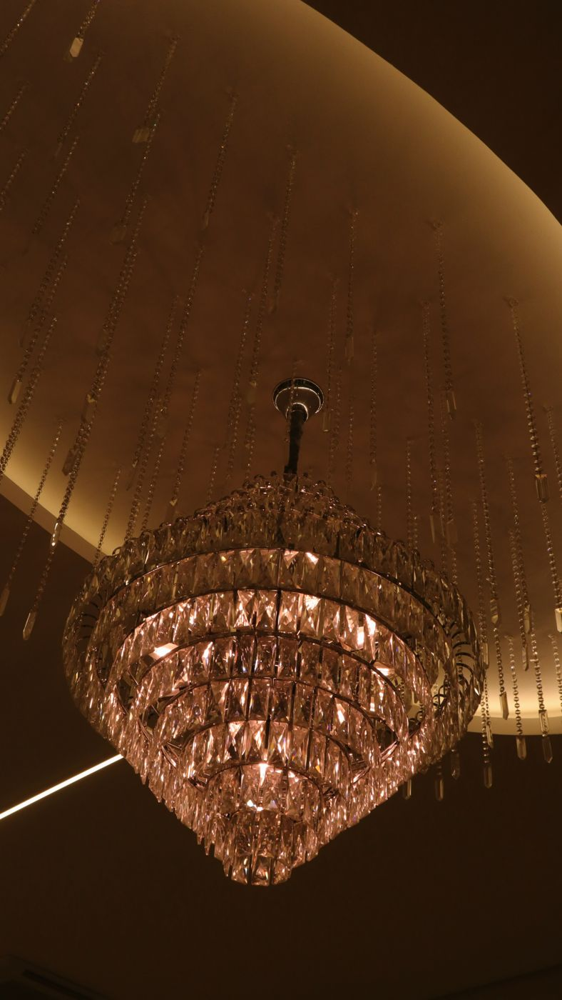
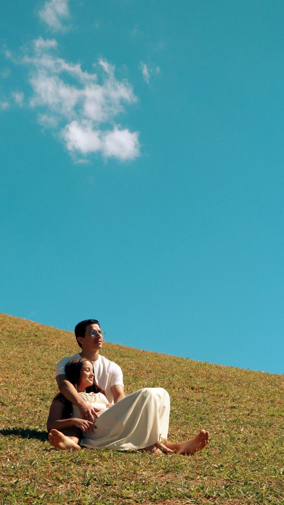
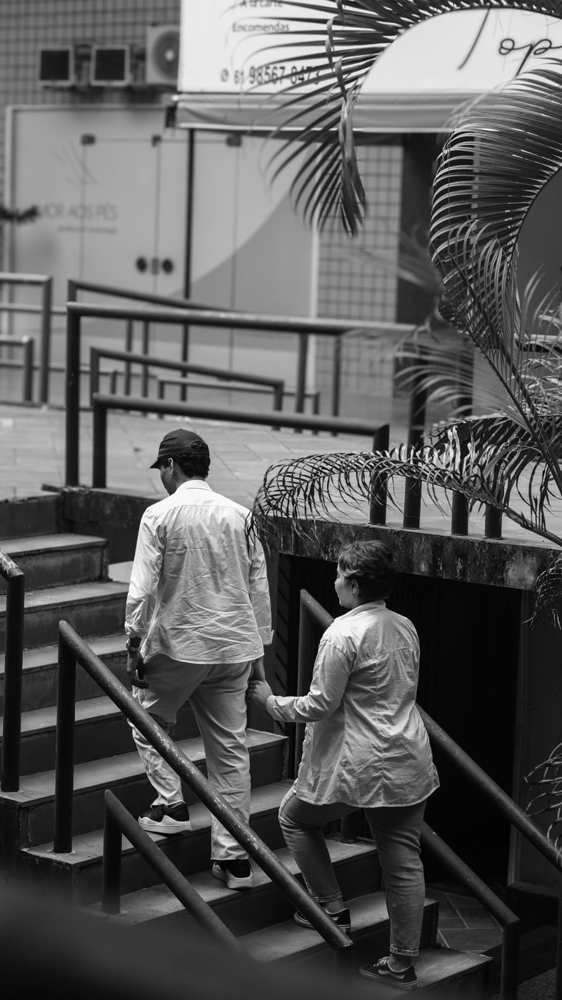
Bastidores
no Instagram
@manu.recordss
Os trabalhos mais recentes, os reels e os bastidores de cada evento aparecem primeiro lá.
Seguir no Instagram